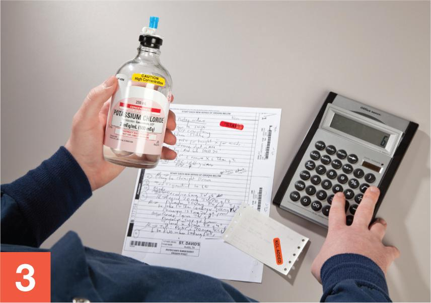
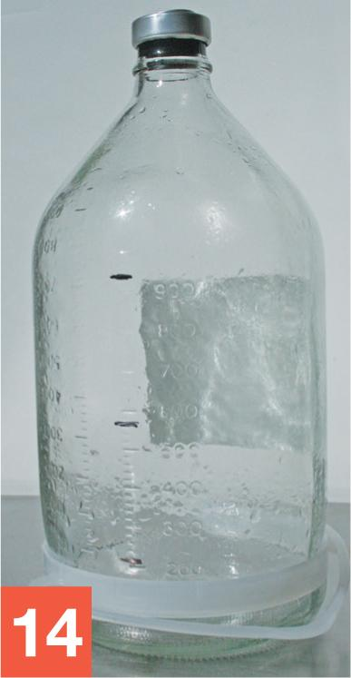
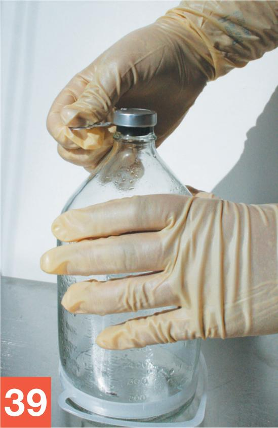
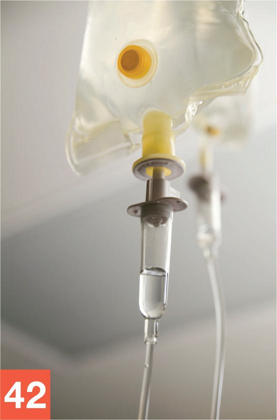
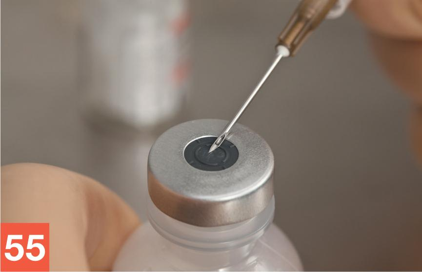
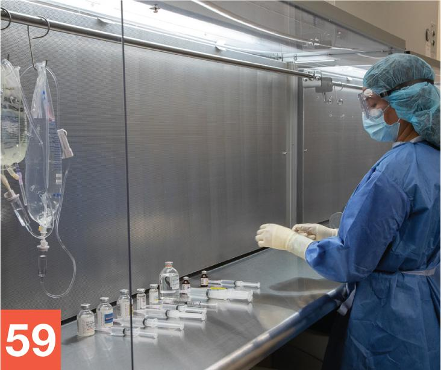

Part 2: Training
15.15 Procedural Lab
This lab walks you through the steps that you must follow to properly prepare a 2-in-1 PN solution using the manual compounding method. Take your time. Work through each step methodically and with close attention to detail.
Note: For the purposes of this procedural lab, you will not perform handwashing and PEC cleaning and disinfection procedures unless directed to do so by your instructor. Should your instructor ask you to perform these procedures, refer to Chapter 8 for instructions on handwashing and to Chapter 9 for procedures on cleaning and disinfection of the PEC.
Essential Supplies
To complete the Unit 2 procedural labs, you will need to ensure that various essential anteroom and buffer room supplies, such as those listed in Table 15.2, are available for your use. If you are using a PEC other than a LAFW, you will need to alter some procedures to account for the type of PEC and the direction of airflow coming from the HEPA filter. In this case, refer to instructor direction or facility SOPs for specific instructions regarding this procedural lab.
Procedure-Specific Supplies
In addition to the supplies listed in Table 15.2, gather the following items specific to the Chapter 15 Procedural Lab:
- D70W; 2,000 mL (may substitute any volume bag size ≥ 500 mL)
- AA 10%; 2,000 mL (may substitute any volume bag size ≥ 500 mL)
- SWFI; 2,000 mL (may substitute any volume bag size ≥ 500 mL)
- EEC; 1,000 mL
- calcium gluconate, 0.48 mEq/mL vial
- NaCl, 4 mEq/mL vial
- KPO4, 3 mM/mL vial
- KCl, 2 mEq/mL vial
- MVI, 10 mL vial
- trace minerals, 5 mL vial
- Humulin R (regular) insulin, 100 units/mL vial
- 1 mL Luer-lock syringe
- 5 mL Luer-lock syringe × 2
- 10 mL Luer-lock syringe × 3
- 30 mL Luer-lock syringe
- regular needles (nonfilter, nonvented needles; either 18 gauge or 19 gauge) × 8
- hemostats × 3
- IV tubing × 3
- sterile 70% IPA swabs
- tamper-evident, sterile, adhesive seals
- scissors (used during disposal of base component fluids)
- access to sink appropriate for base component fluid disposal
- PN label
- PN order.
| Anteroom Supplies |
|---|
|
|
Note: As mentioned earlier, the Chapter 15 Procedural Lab does not include steps for performing hand hygiene procedures. If your instructor directs you to perform hand hygiene as part of the Chapter 15 Procedural Lab, you will need access to a sink and hand hygiene supplies. Refer to Chapter 8 for details on hand hygiene procedures. Remember that, in practice, you must perform hand hygiene procedures prior to preparing a CSP in a sterile compounding area. |
| Buffer Room Supplies |
|
|
Note: As mentioned earlier, the Chapter 15 Procedural Lab does not include steps for cleaning and disinfecting the PEC. If your instructor directs you to do this process as part of the Chapter 15 Procedural Lab, you will need access to PEC cleaning and disinfection supplies. Refer to Chapter 9 for details on PEC cleaning and disinfecting procedures. Remember that, in practice, you must clean and disinfect the PEC prior to preparing a CSP. |
Procedure
Take a careful, deliberate approach to each detailed step of this procedural lab. In practice, using this approach ensures the preparation of a sterile CSP. Refer to instructor directions or facility SOPs to determine whether goggles are required for the procedure and whether sterile gloves should be donned in the anteroom or buffer room.
Note: For step 1 that follows, please refer to Chapter 6 for a reminder of the step-by-step procedures required for medication order and CSP label verification. For steps 2–14, refer to Chapter 7 for pharmacy calculation procedures. For steps 15–18, refer to Chapter 5 for a reminder of the process for gathering and staging supplies. For steps 19–31, refer to Chapter 8 for step-by-step hand hygiene and garbing procedures. For the purposes of this lab, perform steps 1–24 and steps 77–82 in the anteroom. Perform steps 25–76 in the buffer room.
Verifying the Label
- Review the CSP label to verify that all of the information on the label matches the PN medication order. To help you with this task, compare the CSP label (see Figure 15.6) to the medication order (see Figure 15.7).
![The label reads as follows: I V piggyback, Memorial Hospital, patient name, room, I D number, and R X number. Base Solution Concentration: Dextrose 15 percent, Aminosyn 3.5 percent, sterile water for injection qs to 960 milliliters TV, rate: 40 milliliters per hour. Additives: Calcium gluconate 9.6 milliequivalent, Sodium chloride 38.4 milliequivalent, Potassium phosphate 11.52 millimoles, Potassium chloride 19.2 milliequivalent, MVI 10 milliliters, Trace minerals 5 milliliters, regular insulin 57.6 units. Keep refrigerated. Warm to room temperature before administration. This is a compounded preparation. At bottom: B U D, tech, and R P h.](../../media/indigo.greatrivertech.net/components/14101944/images/C15_FIG_06_0.jpg)

Calculating the Desired Volume of Dextrose
- Read the PN order (and corresponding CSP label) to determine the desired concentration (DC) of dextrose and the desired total volume (TV) of the PN solution. Then look at the dextrose base component (BC) to determine its concentration.
- Assuming that the PN order calls for a desired dextrose concentration of 15%, a total volume of 960 mL, and a dextrose base component with a concentration of 70% (D70W), perform a calculation to determine the amount of D70W in milliliters (x mL) needed to prepare the PN solution. Use the formula: (TV / BC) × DC = x mL. (960 / 70) × 15 = x mL (960 / 70 = 13.71) × 15 = 205.65 or 206 mL (rounded to the nearest milliliter)

George Brainard/© Paradigm Education Solutions - Use a permanent marker to record the approximate volume of 206 mL on the EEC.
Note: Because each graduation mark on a 1,000 mL EEC indicates a 20 mL change in volume, it is impossible to accurately measure a volume of 206 mL. Therefore, you should mark the EEC approximately halfway between the 200 mL and 220 mL graduation indicator.
Calculating the Desired Volume of Aminosyn
- Read the PN order to determine the desired concentration (DC) of Aminosyn (AA) and the desired total volume (TV) of the PN solution. Look at the AA base component (BC) to determine its concentration.
- Assuming that the PN order calls for a desired Aminosyn concentration of 3.5%, a total volume of 960 mL, and an AA base component with a concentration of 10%, perform a calculation to determine the amount of AA 10% in milliliters needed to prepare the PN solution. Use the following formula: (TV / BC) × DC = x mL.
(960 / 10) × 3.5 = x mL
(960 / 10 = 96) × 3.5 = 336 mL
- Calculate the volume of D70W plus the volume of AA 10%:
206 mL + 336 mL = 542 mL
Use a permanent marker to record the approximate volume of 542 mL on the EEC.
Note: Since each graduation mark on a 1,000 mL EEC indicates a 20 mL change in volume, it is impossible to accurately measure a volume of 542 mL. Therefore, you should mark the EEC at or slightly above the 540 mL graduation indicator.
Calculating the Desired Volumes of Additives
- Look at the PN order to determine the desired dose of the first additive—in this case, calcium gluconate.
Use the basic formula to determine the volume of calcium gluconate to draw up. For this scenario, the desired dosage for this PN solution is 9.6 mEq and the concentration on the calcium gluconate label indicates that it has a concentration of 0.465 Eq/mL.
9.6 mEq / 0.465 mEq = x mL
9.6/0.465 = 20.6 mL
Therefore, 20.6 mL must be drawn up for this PN solution.
- Using a ballpoint pen, neatly record the amount you determined in step 8, in parentheses, on the PN order, immediately following the calcium gluconate dosage. For this lab, record (20.6 mL).
- Look at the PN order to determine the desired dose of the next additive and use the basic formula to determine the volume of solution needed.
- Using a ballpoint pen, neatly record the amount you determined in step 10, in parentheses, on the PN order, immediately following the KCl dosage.
- Repeat steps 10 and 11 for each of the remaining additives, except for the trace minerals and MVI additives, on the PN order.
Note: The dose of trace minerals and MVIs ordered by the prescriber is already in milliliters. Therefore, you simply draw up the volume indicated on the PN order for these two additives.
Calculating the Desired Volume of Sterile Water for Injection
- To calculate the desired volume of SWFI, add together the volume of each of the additives. You determined the volume of each additive in steps 8–12. Then, determine the volume of SWFI needed for the PN solution by subtracting the volume of dextrose, AA, and all of the additives (determined in steps 2–12) from the desired total volume (TV) of the PN solution.
20.6 mL calcium gluconate
9.6 mL sodium chloride
3.8 mL potassium phosphate
9.6 mL potassium chloride
10 mL MVI
5 mL trace minerals
+0.58 unit regular insulin
59.18 or approximately 60 mL (rounded to the nearest milliliter); the total volume of additives
Now, starting with 960 mL, subtract 206 mL (the volume of D70W), subtract 336 mL (the volume of AA 10%), and subtract 60 mL (the volume of all the additives) to determine the x mL of SWFI.
960 – 206 – 336 – 60 = 358 mL of SWFI
- Use a permanent marker to record a third volume on the EEC, denoting the volume of dextrose plus the volume of Aminosyn plus the volume of SWFI:
206 mL + 336 mL + 358 mL = 900 mL
Mark the approximate volume of 900 mL on the EEC. The three marks on the EEC make it easier for you to measure the proper base component volumes.

© Paradigm Education Solutions
Gathering and Staging Supplies
- Gather all of the remaining items on the Chapter 15 supply list.
- Using one or more low-lint wipers presaturated with sterile 70% IPA, thoroughly wipe down the entire transport vehicle. Then discard the used wiper(s) into the waste container.
- Before crossing into the clean side of the anteroom, use a new, low-lint wiper presaturated with sterile 70% IPA to wipe the surfaces of the IV bags’ dust covers. Then place the IV bags on the transport vehicle and discard the used wipes into a waste container.
- Repeat step 17 with each of the remaining supply items.
Garbing and Transport of Supplies
- Don shoe covers while stepping over the line of demarcation into the clean side of the anteroom.
- Don a head cover.
- Don a face mask.
- Don a facial hair cover (if needed).
- Don goggles for eye protection (if needed).
Note: For the purpose of this training lab, you will skip handwashing, unless told otherwise by your instructor.
- Don a gown.
- Apply an alcohol-based hand rub to all surfaces of your hands and allow your hands to dry thoroughly.
- Don sterile gloves.
- Apply sterile 70% IPA to all surfaces of your gloves and allow your gloved hands to dry thoroughly.
- Use a transport vehicle to bring all supply items into the buffer room.
- Place the transport vehicle onto a table or cart within the buffer room. If a cart is used, position it so that it does not interrupt airflow into the PEC’s prefilter.
- Apply sterile 70% IPA to all surfaces of your gloves and allow your gloved hands to dry thoroughly.
Note: For the purposes of this training lab, you will skip cleaning and disinfecting the PEC, unless told otherwise by your instructor.
Preparing the PN Base Solution: Adding D70W to the EEC
- Wipe gloves with sterile 70% IPA and allow your gloved hands to dry. Remove the bag of D70W from the dust cover. Discard the dust cover into the waste container. Place the D70W bag temporarily onto the PEC’s work surface within the DCA. Place the IV tubing, regular needle, and sterile 70% IPA swabs into the outer six-inch zone of the PEC.
- Remove the outer wrapper from the IV tubing. Place the IV tubing onto the PEC’s work surface, within the DCA. Discard the tubing’s outer wrapper into the waste container. Roll the tubing clamp shut by using your thumb and forefinger to roll the clamp down, toward the tubing needle adapter.
- Manipulate the needle adapter at the end of the tubing, opposite the spike, so that it receives uninterrupted airflow from the PEC’s HEPA filter. Hold the tubing between your thumb and forefinger, approximately one inch back from the cap covering the needle adapter on the end of the tubing. Use your other hand to remove the cap from the needle adapter. Place the cap from the needle adapter into the discard pile. Take care not to touch or shadow the uncapped needle adapter at any time.
- While holding the tubing needle adapter, carefully remove the outer wrapper from a capped regular needle. Aseptically attach the capped needle to the adapter. Place the needle wrapper into the discard pile. Temporarily place the tubing—with attached, capped needle—onto the PEC’s work surface within the DCA.
- Position the pull tag on the D70W bag so that it receives uninterrupted airflow from the PEC’s HEPA filter. Grasp the pull tag on the bag’s tubing port and pull it down and off, thereby removing the tubing port plug from the bag.
- Grasp the drip chamber of the IV tubing with your thumb and forefinger, such that the tip of the tubing spike is pointing toward your other hand and your thumb and forefinger rest against the plastic crossbar.
- Keeping the tubing within the DCA, use your hand to remove the spike cap. Place the spike cap into the discard pile.
- Grasp the tail of the tubing port on the D70W with your thumb and forefinger. Aseptically insert the IV tubing spike into the bag’s tubing port. Use a gentle back-and-forth twisting motion to ensure that the spike is completely inserted into the port. Hang the D70W bag, with attached tubing-and-needle unit, onto a hook on the PEC’s hang bar so that it does not impede HEPA filter airflow to the other supply items.
- Wipe your gloves with sterile 70% IPA and allow your gloved hands to dry. Then wipe the EEC with sterile 70% IPA. Bring the EEC into the PEC and carefully remove the aluminum cap by gently lifting up the small pull tag on the top of the cap. Grasp the pull tag and pull it down toward the bottom of the EEC, pulling the tag all the way down and removing it. Take care not to twist the tag, so that it does not break in two. Once the entire tag has been removed, use it as a tool for prying off the aluminum ring that encircles the rubber stopper and EEC top. Lift off and discard the coin-like aluminum cap resting atop the EEC’s rubber stopper.

© Paradigm Education Solutions - Position the EEC within the DCA so that the top of the EEC receives uninterrupted airflow from the PEC’s HEPA filter. Open the wrapper of a sterile 70% IPA swab, remove the swab, and wipe the rubber top of the EEC. Place the used swab onto the PEC’s work surface within the DCA. Place the wrapper from the swab into the discard pile.
- Pick up the tubing at the end with the capped needle. Holding the tubing adapter, carefully remove the needle cap and place it onto the IPA swab. Using proper needle insertion technique, insert the needle—with attached tubing—into the top of the EEC.
- Begin the flow of D70W into the EEC by rolling the tubing clamp up. Closely monitor the flow of dextrose into the EEC. When the volume of fluid in the EEC reaches approximately 200 mL (or approximately 20 mL less than the desired volume of D70W), roll the clamp down to restrict the flow rate to a slow trickle. Roll the clamp completely shut when the meniscus of the fluid rests on your first mark on the EEC (i.e., the mark that indicates a volume of approximately 206 mL, or approximately halfway between the 200 mL and 220 mL graduation indicators on the EEC). Ask for a verification check by your instructor or a pharmacist of the D70W volume in the EEC.

iStock.com/KarenMower - After the base component verification check, remove the needle-and-tubing unit from the EEC and carefully recap the needle. Loop the tubing with attached, capped needle over the hook on the PEC’s hang bar. Slide the bag of D70W with attached tubing and capped needle to the one side of the hang bar, so that it does not interrupt airflow from the PEC’s HEPA filter.
Adding Aminosyn to the EEC
- Wipe your gloves with sterile 70% IPA and allow your gloved hands to dry. Then remove the outer dust cover from the AA 10% bag. Discard the dust cover into the waste container. Place the AA 10% bag temporarily onto the PEC’s work surface within the DCA. Pull down on the pull tag to remove it from the tubing port on the AA 10% bag.
- Grasp the tail of the tubing port of the D70W bag between your thumb and forefinger. Attach a hemostat to the tubing port on the D70W bag above the spike. Grasp the drip chamber of the tubing between your thumb and forefinger. Use a gentle back-and-forth twisting motion to pull the IV tubing spike out of the bag’s tubing port. Immediately insert the tubing spike into the tubing port of the AA 10% bag.
- Return the D70W bag, with the hemostat still attached, back onto the hook of the PEC’s hang bar. Place the bag of AA 10% onto another hook on the hang bar, next to the bag of D70W.
- Begin the flow of AA 10% into the EEC by rolling the tubing clamp up. Closely monitor the flow of AA 10% into the EEC. When the volume of fluid in the EEC reaches approximately 520 mL (or approximately 20 mL less than the desired combined volume of D70W and AA), roll the clamp down to reduce the flow rate to a slow trickle. Roll the clamp completely shut when the meniscus of the fluid rests on your second mark on the EEC (i.e., the mark that indicates a volume of approximately 542 mL). Ask for a verification check by your instructor or a pharmacist of the AA volume in the EEC.
- Carefully remove the needle with attached IV tubing from the EEC and recap the needle. Loop the tubing with attached, capped needle over the hook of the PEC’s hang bar that holds the D70W bag. Slide the bag of AA 10% with attached tubing and capped needle to the one side of the hang bar, so that it does not interrupt airflow from the PEC’s HEPA filter.
Adding Sterile Water for Injection to the EEC
- After the AA 10% verification check, repeat steps 44–46 using the SWFI bag.
- Begin the flow of SWFI into the EEC by rolling the tubing clamp up. Closely monitor the flow of SWFI into the EEC. When the volume of fluid in the EEC reaches approximately 880 mL (or approximately 20 mL less than the desired total volume), roll the clamp down to reduce the flow rate to a slow trickle. Roll the clamp completely shut when the meniscus rests on the third mark you made on the EEC (i.e., the mark that indicates a volume of approximately 900 mL).
- Ask for a verification check of the SWFI volume by your instructor or a pharmacist.
- After the verification check has been completed, remove the needle with attached tubing from the EEC and carefully recap the needle.
- Loop the tubing with attached, capped needle over a hook on the PEC’s hang bar that holds the D70W bag and the AA 10% bag. Slide the SWFI bag with attached tubing and capped needle to the one side of the hang bar, so that it does not interrupt airflow from the PEC’s HEPA filter.
Preparing the PN Additives
- Place all of the remaining supply items into the outer six-inch zone of the PEC. Bring the calcium gluconate into the DCA and remove the flip-top cap. Open a sterile 70% IPA swab, remove the swab, and wipe the vial stopper. Place the used swab onto the PEC’s work surface within the DCA.
- Aseptically attach a capped, regular needle to a 10 mL syringe. Pull down on the flat knob of the plunger to draw approximately 10 mL of air into the empty syringe. Remove the needle cap and place it on the IPA swab you previously placed in the DCA. Use proper needle insertion technique to insert the needle into the calcium gluconate vial.

George Brainard/© Paradigm Education Solutions
- Use a clockwise motion (counterclockwise if you are left-handed) to invert the vial above the attached needle-and-syringe unit. Perform the milking technique to withdraw the appropriate volume of calcium gluconate into the syringe.
- Use a counterclockwise motion (clockwise if you are left-handed) to return the vial with attached needle-and-syringe unit to its original position, with the vial upright on the PEC’s work surface.
- Holding only the barrel of the syringe, carefully remove the needle-and-syringe unit from the vial. After removing bubbles and verifying the correct volume, carefully recap the needle. Set the filled syringe and vial to the far left of the staging area within the DCA, placing the syringe on the left side of the vial.
- Repeat steps 54–58 with each of the other additives. Draw the correct volume of each additive into the appropriate-sized syringe and then place it immediately adjacent and to the left of the vial from which it was withdrawn. Line up the syringes and vials left to right within the DCA.

George Brainard/© Paradigm Education Solutions
- Ask for a verification check by your instructor or a pharmacist of the filled syringes.
Injecting the PN Additives into the EEC
- After the verification check, wipe your gloves with sterile 70% IPA and allow your gloved hands to dry. Then open a new sterile 70% IPA swab, remove the swab, and place the empty package into the discard pile. Using the swab, wipe the top of the EEC and place the used swab on the PEC’s work surface within the DCA.
- Pick up the potassium phosphate syringe, holding the syringe as you would a dart. Remove the needle cap and place the cap onto the IPA swab on the PEC’s work surface. Using proper needle insertion technique, insert the needle into the EEC’s rubber top.
- Push down on the flat knob of the plunger until all of the potassium phosphate has been injected into the EEC. Holding the syringe at the barrel, carefully remove the needle-and-syringe unit from the EEC and discard it into the sharps container.
- Wipe sterile gloves with sterile 70% IPA and allow to dry thoroughly. Open a new, sterile 70% IPA swab, remove the swab, and wipe the rubber top of the EEC. Place the used swab on the PEC’s work surface within the DCA. Pick up the syringe containing the next additive—in this case, sodium chloride (NaCl)—holding it as you would a dart. Remove the needle cap and place it onto the IPA swab.
- Using proper needle insertion technique, insert the needle into the rubber top of the EEC. Push down on the flat knob of the plunger to inject the sodium chloride into the EEC. Holding only the barrel of the syringe, remove the needle-and-syringe unit from the EEC. Discard the empty needle-and-syringe unit into the sharps container.
- Wipe sterile gloves with sterile 70% IPA and allow to dry thoroughly. Repeat steps 61–65 to inject all of the remaining additives. Inject the potassium chloride, trace minerals, insulin, potassium phosphate, and the MVI.
- Examine the EEC—which now contains PN base solution and all of the additives— to verify that the solution is free of particulate matter or other evidence of incompatibility.
- Remove the CSP label from the plastic bag and affix the label to the EEC containing the compounded PN solution. Be sure that the label does not cover any of the graduation markings on the EEC. Then cover the EEC’s rubber top with a tamper-evident, sterile, adhesive seal.
Cleaning Up after the Procedure
- Remove the SWFI bag with attached tubing from the hook and place it temporarily in the DCA.
- Using one of the hemostats, clamp the tail of the tubing port, just above where the tubing is inserted into the SWFI bag.
- Grasp the hard plastic exterior of the tubing where it exits the SWFI bag. Using a back-and-forth twisting motion, remove the tubing-and-needle unit from the SWFI bag. Immediately discard the tubing with attached, capped needle into the sharps container.
- Place the SWFI bag with attached hemostat into the transport vehicle.
- Repeat steps 69–72 with the bags of AA 10% and D70W.
- Dispose of used vials and supply items in the appropriate waste containers.
- Return the CSP containing the PN solution; the clamped bags of D70W, AA 10%, and SWFI; and any unused supply items to the transport vehicle, and then return the vehicle to the anteroom.
- In the anteroom, complete the compounding procedure by using a ballpoint pen to record the BUD and your initials on the CSP label. Return any unused supply items to their proper storage locations. Remove your garb according to standard procedures, as described in Chapter 8 of this textbook.
- Place the base component bags into the sink. Remove the hemostats. Destroy each of the base component bags by cutting a hole through the PVC with a pair of scissors. Dump the remaining fluid from each of the bags down the sink. Discard the empty PVC bags into a waste container.
- Saturate 2–3 sterile, low-lint wipers with sterile water (from a pour bottle). Use the saturated wipers to clean each of the hemostats and the scissors.
- Repeat the cleaning process with new wipers saturated in sterile 70% IPA. Return the cleaned hemostats and scissors to their storage locations in the anteroom.
- Ask for a final verification check from your instructor or a pharmacist.
- Await a directive from your instructor regarding the completed CSP. In practice, you would follow your facility’s procedure and either place the CSP in the proper storage location (refrigerator, shelf, etc.) or deliver the CSP for administration to the patient.